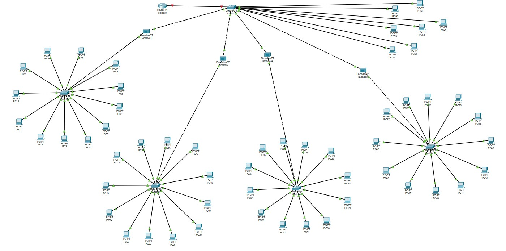
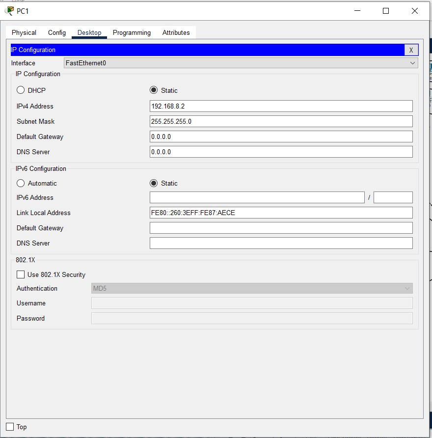
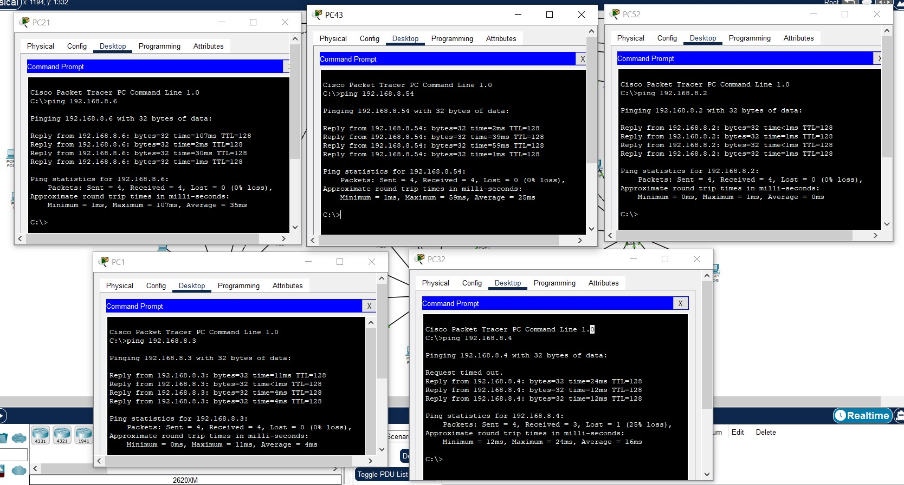
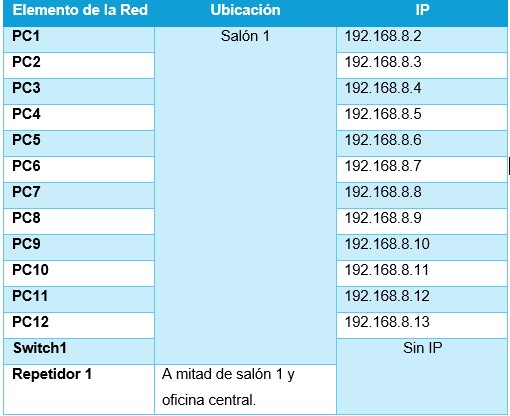
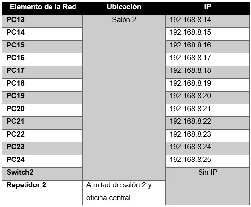
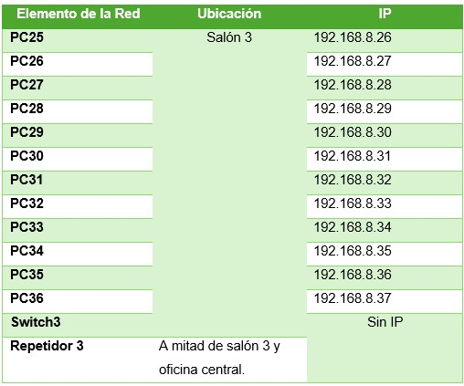
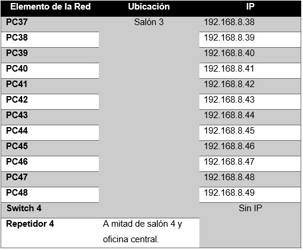
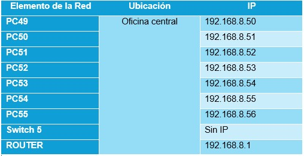
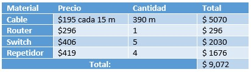

Las redes de computadora estan presentes en todos los sectores, desde las más sencillas hasta las más complejas y es gracias a ellas que tenemos comunicación con practicamente todo el mundo
En esta practica se llevo a cabo la introduccion al programa Cisco Packet Tracer para la simulacion y creacion de redes digitales.
- Introducción -
Las redes de computadoras y sus componentes físicos son la columna vertebral de la conectividad en la era digital. Estas infraestructuras permiten la comunicación y el intercambio de datos entre dispositivos en todo el mundo, facilitando una amplia gama de aplicaciones y servicios. Comprender la importancia de las redes y sus componentes físicos es esencial para desarrollar y mantener sistemas de comunicación eficientes y seguros en diversos entornos.
Los componentes físicos de una red incluyen dispositivos como routers, switches, cables de red, tarjetas de red y dispositivos de interconexión. Estos elementos trabajan en conjunto para facilitar la transmisión de datos entre los dispositivos conectados a la red. Por ejemplo, los routers dirigen el tráfico de datos entre redes, los switches permiten la conexión de múltiples dispositivos en una red local, y los cables de red (como Ethernet o fibra óptica) proporcionan el medio físico para la transmisión de datos. Además, las tarjetas de red permiten que los dispositivos se conecten a la red y los dispositivos de interconexión, como los repetidores y los concentradores, amplían la cobertura y capacidad de la red.
- Materiales -
Cisco Packet Tracer
- Desarrollo -
Objetivo General:
Aplicar los elementos que se utilizan para configurar una red local y el acceso a recursos de un equipo en red.
Utilizando el programa de Packet Tracer de Cisco, simula una red de aplicación, asignando a las computadoras las IP pertenecientes a la red 192.168.8.0.,
utilizando la ventana de comandos utiliza la función ping para verificar la comunicación entre cada una de las computadoras. En una escuela se necesitan desarrollar una red de computadoras, se cuenta con 4 salas de cómputo con 12 computadoras cada uno, y una sala de administración con 7 computadoras para el personal administrativo.
Los salones de cómputo se encuentran a más 100 metros de la oficina administrativa. La oficina administrativa posee un router para la conexión a internet de todos los equipos de la escuela.
Utiliza repetidores y switches necesarios para desarrollar la red.
Elabora un video donde se compruebe el funcionamiento de 5 dispositivos comunicados entre sí.
Elabora un diagrama o mapa representativo de los salones con sus computadoras, así como su ubicación física.
Elabora una tabla comparativa con la distribución física e IP de cada equipo (computadora, repetidor, switch y router).
- Resultados -
Dsitribucion de la Red.


Para cada una de las 55 computadoras se asigno manualmente la ip comenzando por la 192.168.8.2 ya que la .1 esta reservada para el router.
Comunicacion entre 5 dispositivos
Para comunicar 5 dispositivos al mismo tiempo se hizo un ping simultaneo en 5 terminales para observar el flujo de los datos en la red.

Tablas





- Conclusiones -
Los objetivos se cumplieron ya que logramos llevar a cabo la simulación de cuatro diferentes diagramas de red mediante el programa Cisco. Los mensajes eran enviados correctamente entre las computadoras, utilizando switches y repetidores.